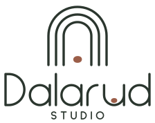
Studio Dalarud gör hem och miljöer som är vackra, personliga och lätta att leva i. Med inredning, homestaging och handgjorda föremål i lera, och med specialpedagogisk kunskap om hur miljön påverkar hur vi mår.
Kärnbudskapet. Ett hem som går från rörigt och överväldigande till lugnt och ordnat. Det bär hemsidan, sociala medier och föreläsningar.
Dalarud kan läsas som dal och rud, ett gammalt ord för röjning i skogen. En glänta i dalen: en ljus plats att landa i.
Ro · Natur · Omtanke · Hantverk
Varm, kunnig och lugn. Du-tilltal och korta meningar, och hellre konkreta tips än fluffiga ord. "Börja i hallen. Det är där dagen startar."
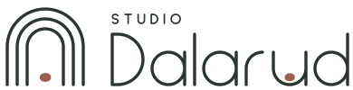
Tre bågar som ett fönster eller en dörröppning, och innerst en sten av lera. Hemmet som en trygg plats som ringar in det viktiga.
Egenritad med samma linje som bågarna: samma tjocklek, rundade ändar och former byggda av bågar och raka ben. Den är inte ett typsnitt.
Stenen vilar i bågen, i hemmet, och i u:et, i dalen. Den knyter ihop märke och namn, och leran med inredningen.
Varje bokstav är ritad med samma linje som märket. Ordet står på samma baslinje som bågarnas fötter, så att märke och namn står på samma golv. Linjen är 3,4 % av märkets höjd, och STUDIO har halva tjockleken.
Ordbilden ska aldrig sättas om i ett typsnitt. Använd alltid originalfilerna.
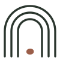
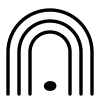
Liggande är huvudlogotypen: hemsida, brevpapper, sociala medier. Färg på ljus botten, negativ på granskog.
Stående passar skyltar, etiketter, förpackningar och visitkort. Vit på lera eller foto.
Symbolen används ensam som profilbild, favicon och stämpel i leran. Svart för enfärgstryck och gravyr.
Frizonen X är halva märkets bredd. Inga andra element, ingen text och ingen bildkant får komma närmare logotypen än så.
Sträck eller förvräng den inte.
Byt inte färger utanför profilen.
Rotera eller luta den inte.
Lägg den inte på oroliga bilder eller akvareller.
Sätt inte namnet i ett typsnitt.
Lägg inte till skuggor, konturer eller effekter.
Ungefärlig fördelning: mycket linne och luft, granskog för text, lera sparsamt som accent. Lera ljus (#D49C82, CMYK 12 40 48 4) används för stenen på mörk botten. CMYK-värdena är omräknade för bestruket papper. Stäm av mot ett provtryck.
Smal och elegant. Stora rubriker och citat, gärna med ett ord i kursiv lerfärg.
Ren och lättläst. Brödtext, knappar, priser och etiketter. Regular, Medium och SemiBold.
Handskrift. Används bara i skisser och planritningar, som en anteckning i skissboken.
Hierarki: Rubrik Instrument Serif 48–96 pt. Etikett Hanken SemiBold 8 pt, versaler, spärrning 16 %. Brödtext Hanken Regular 10–11 pt, radavstånd 1,5.
Alla typsnitt har fri licens (SIL Open Font License) och finns i profil/typsnitt/. Logotypens ordbild är ritad och använder inget typsnitt.
Bilder och porträtt i enkla ramar med svagt rundade hörn. Bågen finns bara i logotypen.
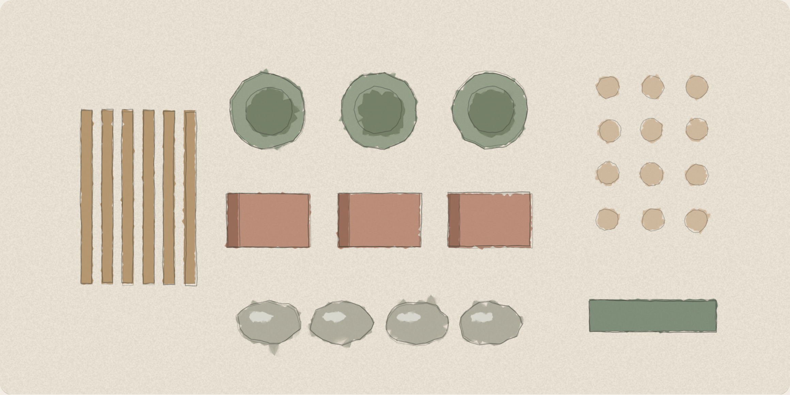
Föremål som går från kaos till ordning, målade i akvarell. Huvudbilden på hemsidan, och fungerar som före/efter-serie på Instagram.
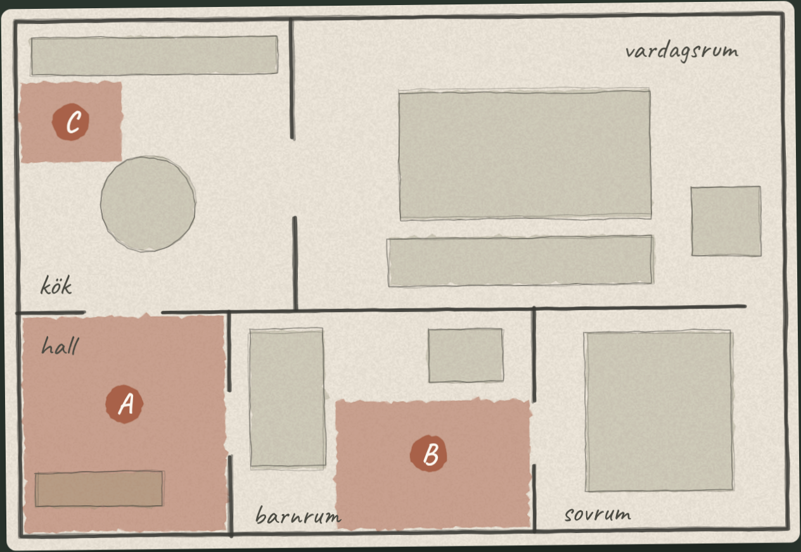
Ro-modellen förklaras med en skissad planritning i blyerts och akvarell. Samma stil används i åtgärdsplaner till kunder.
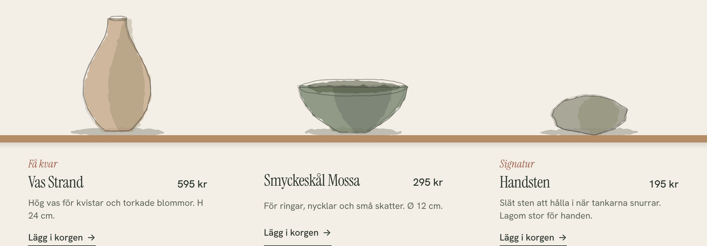
Föremål och miljöer visas som akvarell- och blyertsskisser. Det handgjorda kompletterar logotypens rena linje. På sikt kan Sofias egna skisser och foton ersätta dem.
Den lilla stenen i lera används som punkt, markör och detalj. Den finns i märket, i ordbilden och i föremålen i lera.
Huvudknappen är ett kursivt ord i Instrument Serif med dalen som understrykning. När man pekar fördjupas dalen och stenen rullar ner i den. Övriga knappar är enkla länkar med en pil. Använd huvudknappen sparsamt, högst en eller två per vy.
Alternativen står som ord. Det valda blir kursivt i lera och får stenen under sig.
Dalen från namnet, dal + rud, är understrykningen. Stenen markerar det valda och det särskilda.
Ingen ruta, bara en linje. Textrutor är linjerat papper med handskrivna exempel.
Priser står med prickade linjer, som på en meny. Etiketter som "Signatur" och "Få kvar" är kursiv text i lera, utan ram.
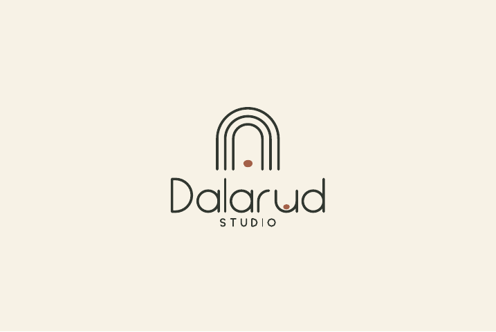
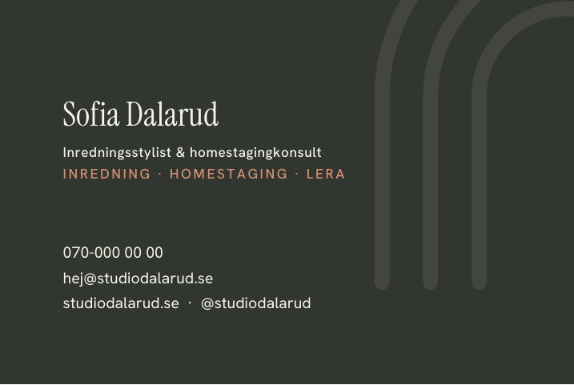
Visitkort 85 × 55 mm, framsida i linne och baksida i granskog. Tryckoriginal: visitkort-tryck.pdf.
Profilbild för Instagram och Facebook: symbolen på linne.
Stämpel i botten på föremålen i lera. Symbolen är symmetrisk och behöver inte spegelvändas.
Hängetikett för föremålen i lera, gärna på obestruket papper i linne eller havre.
profil/logotyp/Format: logotyp (liggande), logotyp-staende och symbol. Varianter: farg, negativ, svart och vit.